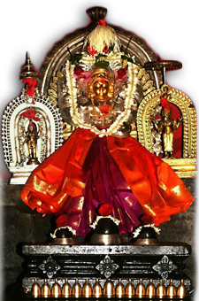

Devi Darshan

Shri Durgaparameshwari Sowkoor
A temple dedicated to goddess Sri Durgaparameshwari is situated in Sowkoor,
Kundapur taluk. This unknown temple is tucked away in the gorgeous hills of the Western Ghats.
But the people who have visited vouch for the power of the Devi.
She is believed to be the sister of Kollur Mookambike.